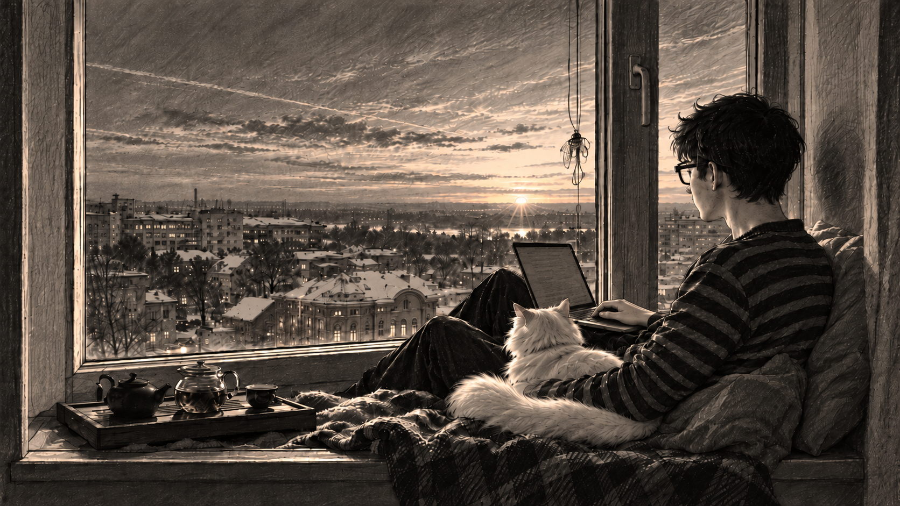

Moje miesto pri okne
Najradšej sa učím a programujem na širokom parapete. Mám tu notebook, čaj a svojho kocúra. Kliknite na očíslovaný bod alebo ho vyberte klávesom Tab.

Notebook
Na notebooku programujem, riešim školské zadania a skúšam vlastné projekty. Aj tu sa učím nové veci o umelej inteligencii.
Môj kocúr Kuzia
Kuzia je môj milý a aktívny pomocník. Vždy je pri mne a jeho spoločnosť mi pomáha upokojiť sa a sústrediť.
Čaj a čajová doska
Čaj mi spestruje prácu a dodáva chuť aj nudnejším úlohám. Podľa nálady si vyberám čaj, pri ktorom sa cítim sviežejšie alebo sa mi lepšie sústredí.
Okno a výhľad
Občas sa pozriem von a sledujem, ako za oknom plynie život. Vnímam v tom harmóniu a rád sa na chvíľu zasnívam.
Široký parapet
Tu sa môžem pohodlne oprieť alebo si sadnúť do pololežiacej polohy. Je mi to príjemnejšie než sedieť rovno na stoličke a výhľad dotvára moje miesto na prácu.